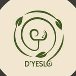

Saturday8–12
Athens, Georgia
Made locally.
Found nearby.
Visit D'Yeslo in person, ask about a piece you saw online, or arrange a convenient local pickup.
Weekly rhythm
Meet us at
the market.
D'Yeslo participates in Athens' local maker community. Market inventory changes often, which means every visit has the possibility of a new one-of-a-kind find.
Wednesday5–8
March–November
Creature Comforts
271 W Hancock DriveAthens, Georgia
Downtown mid-week market
Open directions ↗
Wednesday & Saturday
D'Yeslo is there each week.
Follow Instagram for weather updates, behind-the-scenes progress, and a preview of the pieces coming to market.
Can't make the market?
Stay close
to the work.
Follow new pieces as they are made, ask about commissions, and connect directly with D'Yeslo on Instagram.